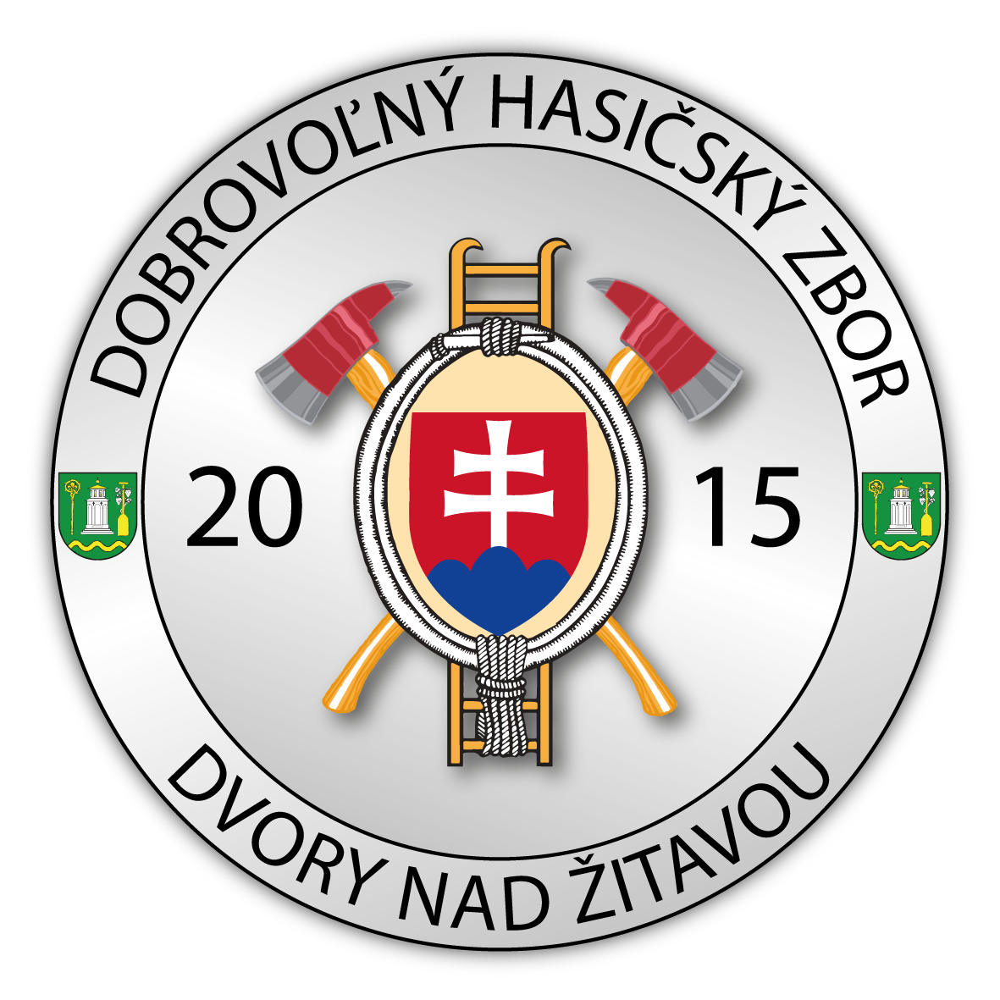
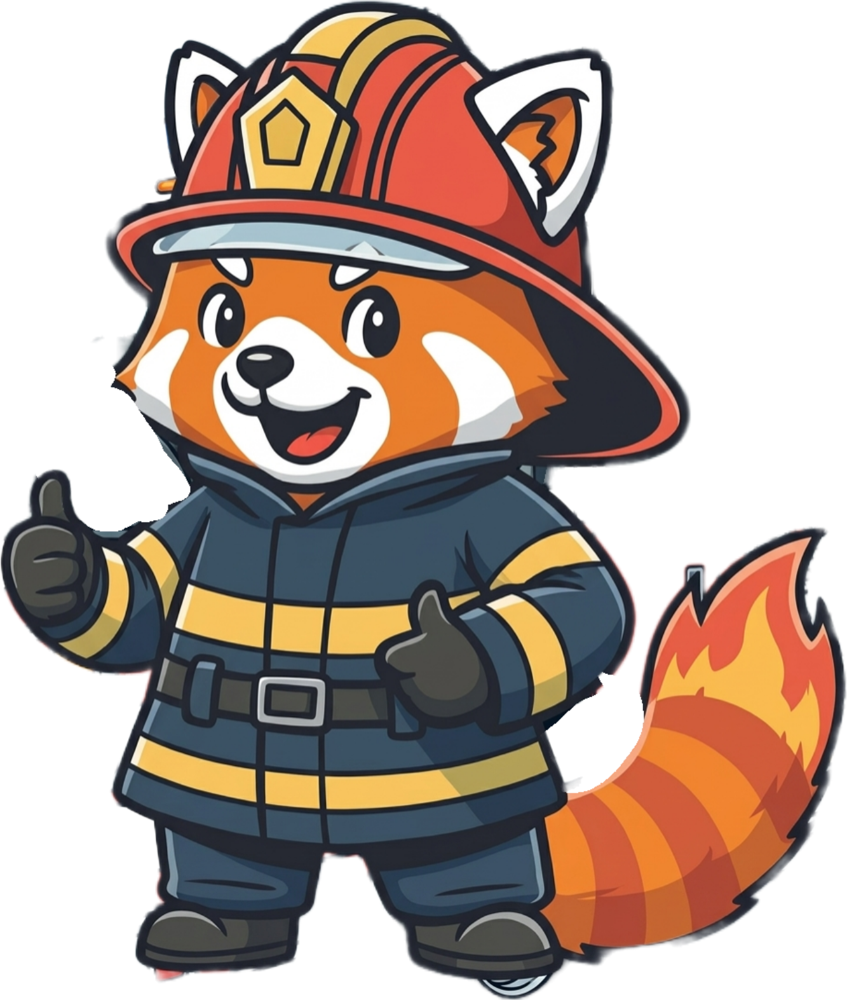
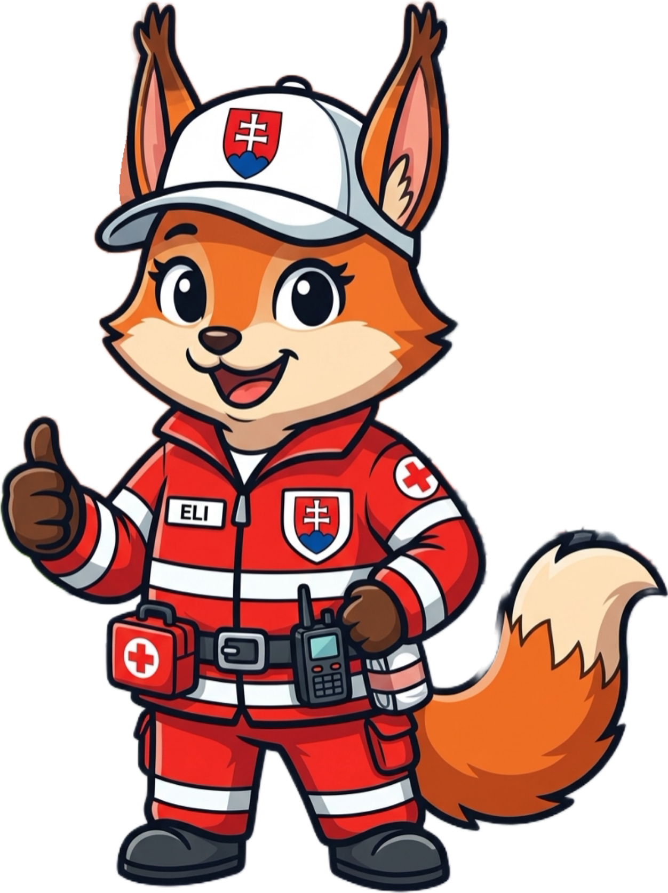
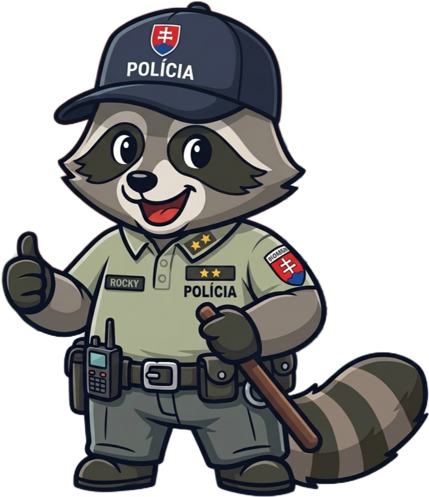

Úspešne si odhalil tajničku a zvládol celú trasu!

za úspešné zvládnutie záchranárskej pátracej trasy v obci, nájdenie všetkých 6 tajných stanovíšť a správne vylúštenie tajničky:

Hasič Redi
Záchranárka Eli
Policajt Rocky